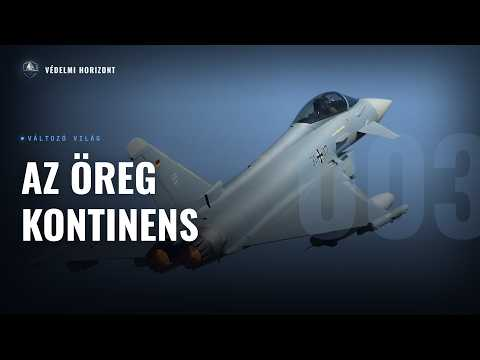

Fegyverkezés és gazdaság: Merre tart az öreg kontinens?

Leírás
Résztvevők: Zsebeházy Bálint, Lázár Domonkos
Üdvözöljük a Védelmi Horizont kutatóműhely harmadik adásában!
Ebben az epizódban egy klasszikus SWOT-keretben vesszük górcső alá az öreg kontinenst: hol áll ma az Európai Unió a világ legnagyobb kereskedelmi blokkjaként, miért tágul mégis a termelékenységi olló az USA-val szemben, mit ígér a zöld átállás és az egységes piac elmélyítése, és vajon a ReArm Europe pénzei valóban az európai hadiipart erősítik-e – vagy ismét amerikai polcról vásárolunk. A makrogazdasági képtől a védelmi ipar (MBDA, EDTIB, FCAS, SAFE) szintjéig jutunk el.
Leirat beszélőnként
Üdv mindenkinek, ez itt a Védelmi Horizont, az a podcast, ahol gazdasági, hadépari és biztonságpolitikai szempontok alapján nézünk rá ugyanarra a témára, egyszerre, egy asztalnál. A nevem Lázár Domonkos, és most ketten ülünk a mikrofonok mögött, velem szemben Zsebeházi Bálint. Sziasztok! Szia, Válint! A mai adásban Európa került terítékre. Egy rövid szvotelemzés keretein belül vizsgáljuk meg, mire számíthat az öreg kontinens gazdaság és hadipari szempontból. Válint, akkor kezdjük is azzal a kérdéssel, hogy te hogyan határoztad meg Európát?
Hát én a saját elemzésemnél ugye ilyenkor ugye domi jelenleg a gazdaságot vitte, én pedig kifejezetten a hadipari szempontokat vettem itt figyelembe, amikor itt a SWOT elemzésnél ugye az erősségeket, gyengeségeket, lehetőségeket és veszélyeket mérlegeltem. Én alapvetően itt egyhalmazva Ugye az Európai Uniós országokat vettem, de mellett ugye biztonságpolitikai szempontból az Európai NATO-t is belevettem, ugye ebbe Törökország is nagyon fontos szereplő, ugye NATO-nak a második legnagyobb hadserege törökországi. Tehát, hogy én majd kicsit a török hadipart is bele fogom vonni egy-két helyen, de nyilván alapvetően ahhoz, hogy így A nagy Európát megértsük, meg a nyugati berendezkedéshez tartozó Európát elemezzük ahhoz. Legtöbbször nyugat-európai példákat fogok hozni, mert azok világítanak rá legjobban ilyen strukturális problémákra. Erősségekre, lehetőségekre. De te Domi, hogyan nézted Európát itt?
Én legtöbbször az Európai Unióra fogok hivatkozni, mivel gazdasági szempontból nyilván az egy koherensebb egység, mint egyébként Európa, amit ugye sokszor vitatkoznak róla, hogy igazából hogyan is tudunk meghatározni. Néha azért kitérek Norvégia, Svájc, ezekre az országokra is, mert nyilván egy kontinensen vagyunk és nagyon összefüggő a gazdaság az Európai Uniónak. Meg hát ugye az Egyesült Királyság, ami megint egy külön téma, hogy végül is Európai Unió volt. Igazából egy részét szeretnék még most is, és ez egész Brexit, ez egy teljes más probléma halmaz, de alapvetően az Európai Unióra fogok koncentrálni, néha kitekintve erre a néhány másik országra. És akkor, ahogy említetted is, egy SWOT elemzést fogunk most csinálni. Ugye a SWOT az a Strengths, Weaknesses, Opportunities and Threats, tehát az erősségek, gyengeségek, lehetőségek és veszélyek elemzésére épül, és el is kezdeném akkor gazdasági szempontból. A gazdasági erősségeknél én elsősorban azt emelném ki, hogy Európa, illetve az Európai Uniónak a gazdasági mérete azt szerintem sokszor nincsen annyira helyen a fejekben. Tehát szerintem sokszor a narratíva az az, hogy van a nagy USA, van a nagy Kína, meg hát valahol ott az Európai Unió.
De egyébként... Amúgy érdekes szerintem ez a narratíva amúgy abból az elemzői következtetésből jön már. Tehát ez egy teljesen konstruált dolog olyan szempontból, hogy most vagyunk valahol, de ugye az elemzők azt nem ezt nézik, hogy hol vagyunk éppen, hanem hogy milyen trendek fognak következni. Hát igen. Igen, például azért Kínánál is szembe jöttek ilyenek, hogy ott is lehet, hogy valahol trendforduló van, vagy sem. Ugye ezek mindig kérdésesek, mert hogyha mostanit, vagy hát beépítek mondjuk egy adat elemző modellben az elmúlt 20 év adatait Kínára, vagy 50 évre, akkor azt fogja mondani, hogy hát ez ki fog jönni a francba, és igazából ez folytatódni fog. De nyilván a valóságban ezek a trendek megtörnek, vagy sem. Ugye ez Európára is igaz, hogy most a globális szerepe csökken Európának, de hát hogy ez a trend, ez megfordul-e, vagy hogyan fog alakulni igazából? Hát igen. Ez egy másik kérdés, de folytasd, Domi.
De igen, kicsit erés akarok kitérni majd. Ugye elsősorban azt hoznám, hogy lakossági szempontból azért mégis vagyunk 450 millióan itt az Európai Unióban, meg ugye hogyha még hozzáadjuk a néhány európai országot, akkor még többen. Ez ugye az USA-nak a lakosságának magasabb, nyilván Kínánál sokkal kevesebb, de egyébként GDP-ben, ha összeadjuk az Európai Uniót, akkor Kínát egyébként megelőzzük. Tehát ha azt nézzük, hogy ez egy koherens gazdasági egységként kezeljük az Európai Uniót, főleg amíg hozzáveszünk ugye az Egyesült Királyságot, Svájcot, amik szintén nem elhanyagolható méretű gazdaságok, akkor azért itt egy tetemes Nagy fogyasztással, nagy termeléssel rendelkező gazdasági szereplőről van szó globális szinten, és szerintem érdemes ezt kicsit így helyretenni, hogy azért Európának van szerepe a világgazdaságban. És itt ki is térnék néhány olyan területre, ami szerintem meghatározó az Európai Unió, illetve Európa gazdasági erejét kiemelve. Az első az az, hogy egyébként mi vagyunk a világ első számú kereskedelmi blokkja. Tehát ha megnézzük a 2024-es Eurostat adatokat, akkor azt látjuk, hogy az EU teljes nemzetközi áru- és szolgáltatáskereskedelmi volumene import és export együtt az globálisan a legmagasabb. Ez előzi az EU-sát is és Kínát is. És ugye itt ha megnézzük az ábrát, amit majd a hallgatók, illetve a nézők inkább látni fognak, Ha ott megnézzük a negyedik elemet, az pedig ugye az Egyesült Királyság, amit ha Európáról beszélünk, én hozzávennék az EU-hoz, akkor pedig kifejezetten egyértelmű, hogy a nemzetközi kereskedelemben Európa a legfontosabb. Ezt szerintem így ki lehet jelenteni. És csak hogy kicsit kontextusba helyezzük ezt a 4000 milliárd euró környéki kereskedelmi volument, ez úgy nagyjából négy Hollandia, vagy négy Törökország, vagy egy Japán teljes éves GDP-je lenne. Ami szerintem azért elég érdekes, tehát ha Japán egész évben csak az EU importját gyártaná, vagy az EU exportját gyártaná, akkor sikerülne legyártani, ha minden mást véretennének. Szerintem azért ez egy eléggé meghatározó és eléggé Elég jó dolog, hogy Európa erre képes. És ha megnézzük a következő ábrán a globális részesedést, látszik, hogy olyan 17% környékén vagyunk itt az Európai Unióban a világon, ami szintén megint csak előzi Kínát, előzi az Egyesült Államokat, és ugye az Egyesült Királyságot pedig tulajdonképpen hozzá is lehet adni ehhez, hogyha Európáról beszélünk. Tehát egy megkerülhetetlen gazdasági szereplő az Európai Unió, és ezt szerintem ez a stabil export pozíció is mutatja, amit a következő ábrán fogunk megmutatni. Egy stabil nevekedés látszik 2015-től 2025-ig. Ugye szerintem itt érdemes megemlíteni azt, hogy ugye volt itt 25 április másodikána Kicsit késő és kicsit rossz áprilisi elsői poén, amit Trump elsütött itt a világgazdasággal, a vámjaival, de ez sem vetette vissza olyan mértékben az Európai Unió importját és exportját. Nyilván ez egy folyamatban lévő kérdés, de Tehát ez egy folyamatban lévő kérdés, de azért úgy látjuk, hogy az Európai Unió az képes volt ennek ellenállni. És ugye az Egyesült Államoknál az a kicsit nehéz az Európai Uniónak, hogy a legfőbb export és importpiac az egyértelműen az USA, illetve Kína. Tehát ezért ez a nagy export volumen szerintem veszélyeket is hordoz magában. Mert ha jön például egy ilyen protekcionista fordulat a világban, akkor az az Európai Uniót eléggé fájdalmasan tudja érinteni. Viszont szerintem itt azt is fontos kiemelni, hogy azért Kína és az USA is érdekelt abban, hogy itt kereskedelmi kapcsolatok fönnmaradjanak. Illetve az EU-nak megvan az az előnye, hogy belső kereskedelmét Jó eséllyel, bár ez föltételezés, de szerintem a belső kereskedelme az EU-nak jobban lesz védve még egy ilyen protekcionista fordulat esetén is, mivel ugye van az egységes piac, a közös vámrendszer, tehát egyébként még egy ilyen protekcionista fordulat sem hiszem, hogy Olyan mértékben kivillenteni az Európai Uniót, mint azt néhányan vizionálják. De akkor térjünk is át a védelmi iparra.
Hadipar szempontjából az erősségeket én ott emelném ki, hogy gyakorlatilag egyébként nagyon erősen beágyazott és nagyon nagy hadipari vállalatok vannak Európában. Például ilyen az MBDA, amely igazából rakétarendszereket gyárt, de hogy az amerikai cégeken kívül igazából a világon ez az egyetlen, amelyik teljes lefedettséget tud nyújtani rakétarendszerek szempontjából. Ez a ballisztikus rakétáktól kezdve a robotrepülőgépeken át eléggé sok mindent lefed a MBDA, és ezt magas technológiai színvonalon is készíti el. Ugye itt ezeknek a gyártóhelye is rendkívül diverzifikált, tehát hogy Franciaországban, Olaszországban, az Egyesült Királyságban és Németországban is Vannak gyárai, és ez nagy részt egyébként az ilyen nagyobb hadipari szereplőkre igaz is. A többieknél is, hogy Reinmetall is alapvetően több országban is gyárt, és így nincsenek egypontos sebezhetőségeik. Emellett azt is kiemelném itt, hogy ugye sokszor az innováció Róla beszélünk, hogy Európában az innováció elmarad. Ez igazából a hadiparban nem fedezhető fel, sőt, folyamatosan tudja tartani az Egyesült Államokkal ezt a versenyt a legtöbb esetben. Itt van például a Lockheed Martin, amerikai Lockheed Martin. Például a Juhókokat, tehát ez ilyen autonóm helikopterrendszer, amely a Black Hawk-nak egy ilyen változata. Az a lényege, hogy igazából pilóta nélküli.
Tehát pilóta nélküli helikopter tulajdonképpen?
Igen, igen. Ez a hagyományos Black Hawk-nak a pilóta nélküli változata. Igazából az a lényeg, hogy miután kispóroljuk a pilótáknak a helyét, ezután sokat nagyobb terhet, hasznos terhet tud magával szállítani a helikopter, és ezt a Lockheed Martin-nál ez a juhók megoldás volt. Utána igazából az Airbus-nál hónapokkal később már megjelent ennek az európai váltatata, a U145-ös, amely szintén egy ilyen korábbi rendszernek az autonóm átételére alapszik. Emellett, igen, amit még ki szeretnék emelni, hogy ugye megjelenik ez a pluári soknemzetiségű ipari struktúra, Ugye itt van egy ilyen közös verseny is, hogy nem olyan fajta megoldások vannak, mint az Egyesült Államokban. Például a Bradley harcjármű, amely már ötven éve itt van velünk, és még mindig szolgál, és az Egyesült Államok hadserege sehogy nem tudja kiváltani. Mert a General Dynamics-nél senki nem akarja leváltani, mert sokkal jobban megéri folyamatosan fejleszteni azt a platformot, meg rárakni plusz dolgokat. Csak hát ez egy ilyen régi platformnál már ez eléggé idejét múlt dolog. Míg mondjuk Európában a LINX-ek, magyarul híúzok, emellett a CV-90-esek vagy a különböző ilyen harcjárművek megjelennek és igazából folyamatos versenyt alakítanak ki és ezért hatalmas innovációt tudnak elérni ezeknél a fegyverrendszereknél. És a harci szerművek mellett pedig például a dróniparban ugye ez szintén megjelenik. Ugye említettem Törökországot korábban, ott a Baycar egy hatalmas cégé nőtte ki magát ebben az iparákban, és részben sok technológiában, tehát nagyon jól megcsinálják azt, hogy nagyon olcsó, nagyon jó eszközöket tudnak gyártani. De mellett ugye Németországban is most már megjelentek ezek a dróngyártók, meg Franciaországban is, és így folyamatos verseny alakul ki. Ugye ezeknél a kisebb eszközöknél, ahol viszonylag kisebb az R&D költség, ez tök jól meg tudja érni egyébként. Ezek mellett a példák mellett pedig igazából ami a legszembetűnőbb, az az önjáró lövegek szintjén van. Tehát az Egyesült Államokban a Paladin hobitzer az a 1960-as évek óta van üzemben tartva. Emellett viszont Európában az jelenik meg, vagy azt látjuk, hogy gyakorlatilag a brit Archer, a német Panzerhobitzer 2000-es mellett még a Rheinmetall piacra dobta az RCH 155-öst. Ami igazából már harcászatilag is forradalmasítani tudja ezt. Ugye gyakorlatilag van ez a shoot and scoot taktika, ami azt jelenti, hogy lövünk egyet, akkor gyors elmegyünk honnan, aztán még egy helyről lövünk. Az RCA-155-ös már menet közben tudja ezt csinálni, tehát csak rárakom egy útra, és az egész nap tud fel-alá mászkálni igazából. És ugye ez azért is érdekes, mert ott az interopabilitás is megjelenik, hogy más eszközökkel közösen egy dolgot használ. Ugye a boxer alváza van igazából, amivel működik, tehát ezek nagyon érdekesek még.
Hát meg itt azért lehet, hogy az is előny lesz, hogy Ukrajna, bár ezt lehet, hogy inkább majd a lehetőségeknél említsük meg, de azért Ukrajna mégiscsak itt van a szomszédban, azért mégiscsak Európa része, tehát az ottani drónfejlesztések és drónhadviselésnek a tapasztalatai jó eséllyel azért Európába, az Európába is.
Hát ezt majd a lehetőségeknél még jobban kifejtjük, de akkor folytassuk a gyengeségekkel.
Így is van. Hát sajnos a gyengeségeknél is azért van mit megemlíteni az Európa és Európai Unió kapcsán. Én itt elsősorban a Draghi jelentésre térnék ki. Ugye ez nem tudom ki mennyire ismeri. Mario Draghi, ő korábban Alaszország miniszterelnöke is volt és az Európai Központi Banknak is volt az elnöke. És őt bízták meg azzal, hogy készítsen egy jelentést az európai versenyképességről. És kifejezetten annak a struktúrális hibáiról, illetve azoknak a megoldási javaslatairól. Hát azért talált egyet s mást, több különböző témát emelt ki. Egyébként egy nagyon, szerintem egy kifejezetten jó jelentésről van itt szó. Alapvetően kiemelte a produktivitást, mint probléma Európában. Ezt összekapcsolta a magas energiárakkal, illetve még kitért az innovációnál így a tech szektorra, a venture capitalnak a hiányára, illetve úgy egyáltalán az innovációnak így a Fiskális és egyébként vállalati hiányosságaira is. Én most elsősorban inkább az idő szűkében a produktivitásra és az energiárakra térnék ki kicsit jobban. Ugye ezt a termelékenységi ollónak szoktuk fordítani ezt a productivity gap-et. Ez nagyjából úgy néz ki, hogy az EU és az USA hasonló szinten volt a 90-es évek körül, azonban 2002-re már 17% volt az Egyesült Államok előnye, és ez 30%-ra tágult. Ami hát egy 20-25 év alatt egy elég nagy lemaradás. Az elemzés az a lemaradás 72%-áért közvetlenül az európai termelékenységi növekedés tagnálását teszi felelőssé. Illetve a maradék 28%-ot a munkaerőhozzájárulás számlájára írja. Itt erre van is két ábránk, tehát az első ábra az azt mutatja, hogy a GDP az hogyan maradt el. A 17%-os lemaradásból a 30%-ra, és a következő ábra pedig, ezek egyébként mindkét ábra az eredeti drágjelentésből van, Itt ezt a GDP különbséget látjuk, tehát hogy a maga a produktivitás az 72%-áért felelős a lemaradásnak, míg a munka, tehát amennyivel kevesebbet dolgozunk órákban, az 28%-ot tesz ki. Ez ugye több mindenhez is köthető. Részben azt is kiemeli, hogy ez a történelmi modell, ami a hidegháború utáni európai növekedést fűtötte, tehát a gyorsan növekülő világkereskedelem, egy stabil geopolitikai környezet, Olcsó volt az importált orosz vezetékes gáz, ezek megszűntek, és az EU pedig ugye 21-ben ezt az olcsó gázt, ami egy kifejezetten fontos eleme volt ennek, Ezt is elveszítette, ugye 45%-át a gázimportnak egyébként ezt fedezte. És hát ebből jött ez a hatalmas energiaárhátrány, amit szintén itt a következő ábránra áttérve láthatunk. Eleve volt különbség ebben az EU és az USA között. Azonban ez megint csak növekedett és 23-ra, amikor már ugye kicsit visszább tértek a foszilisztizadók árai, akkor is még azért fönnáll ez. Ez többszörös árat jelent az áramterén és kétszer-háromszorosat és négy-ötszörös magasabb földgáz árat jelent. Ez ugye a kínaiakkal szemben is fönnáll, tehát ez egy nagyon nagy versenyhátránya a nehéz iparban. És ha megnézzük az import összetételét, ugye a legnagyobb mennyiségben egyébként az LNG, a folyékony földgáz az, ami az energia importot fedezi, a második pedig az olaj. És ha megnézzük itt, erre is hoztunk ábrákat. Ha az országok szerinti megosztást nézzük olajban, akkor látjuk azt, hogy egyébként az USA most már az első. Korábban Oroszország 22-ig nagyon vezetett, 25% környékén visszaestek 1-2%-ra. Az USA részesedése megnőtt, és ugye Norvégia szerepe is megnőtt, ami szerintem egy fontos, kiemelendő része a dolognak. Ugyanis ugye Norvégia végül is Európában van, tehát szerintem ez így az európai önellátást, ha most nem csak az Európai Unióban gondolkodunk, ez így megtestesíti. És ha az LNG-t nézzük, partnerek szerint ott pedig egyértelmű az USA dominanciája, azonban Oroszország még 14%-ot itt is kitesz. Hát ugye hosszú távon, ha megnézzük a következő ábrát, látszik, hogy A világháború környékén voltunk a legmélyebben az USA-hoz képest produktivitás szempontjából, azonban itt a 90-es évek végére nagyjából sikerült behozni ezt a lemaradást, azonban onnan újra elindult. Egy lemaradás az USA-val szemben. Az EU-nak ez az egyik fő problémája, amit most meg kéne oldani. Az autóipar egy jó példa erre. Hiányzik a koherens iparpolitika. Úgy lett ráerőszakolva a klímacél a szektorra, hogy nem volt biztosítva, hogy hogyan lehet ezt az akkumulátor ellátási láncot és infrastruktúrát biztosítani mindezek mellett. Kína pedig ezzel szemben sokkal inkább jól alkalmazkodott, amit jól mutat az, hogy a piaci részesedése 2015-től 23-ig 5%-ról 15%-ra ugrott az európai elektromos autópiacon, ami egy hatalmas fenyegetés a hazai gyártásra, és ugye az autogyártás az egyik legfontosabb Európában. Tehát így néz ki Európa gazdasági szempontból. Mit látsz a hadipar terén?
Tehát én azt látom igazából ezen a téren, hogy elsőnek most nem is egy szigorúan ipari szempontot adnék figyelembe, hanem egy struktúrális problémát. Az tulajdonképpen, hogy ez sok országnak, a sok védelmi minisztériumának a közös egyvelegét nézzük, amelyben igazából, hogyha még a NATO országokat nézzük, akkor nagyon szórnak a Ezek az úgynevezett felfogott érdekeik a különböző védelmi minisztériumnak, mert szerintem amúgy nagyon egyfelé korrelálna az érdekük, de cserébe az ő egyéni felfogott érdekük, meg ahogy ők tekintenek a saját kisebb projektjeikre, ott nagyon sok mindent elveszítenek, ugye?
De mármint ezt, hogy érted?
Minden védelmi misztérium azt hiszi, hogy ő a legjobb, és ő tudja a legjobban, amit éppen megképvisel. Tehát mondjuk ott van egy tank, mondjuk legyen a Leopard 2-es, ott van a Leopard 2-es, amit elkészít a Reinmetall. Ugye ebből készít több száz, több ezer darabot. Nem is ez a lényeg, hanem az, hogy akkor jön minden egyes védelmi minisztérium és azt mondja, hogy hát ez az én követelményeimnek így nem felel meg. Mondjuk ott van a német követelmény leírás, ami pont ezek több ezer oldalas mérnöki dokumentumok, hogy ezeknek meg kell felelnie ahhoz, hogy a Bundeswehr, a német hadsereg azt ezt elfogadja és használja. És akkor megfelel nekik. Utána, jó, hát király, magyarok, ti is akartok venni? Ja, ja, ja, de nekünk teljesen más kritériumaink vannak ennek, és ezek ilyen, tehát, ezek alapvetően olyan fajta kritériumok, amik teljesen kikerülhetők lennének, nem tudom, kicsit arrébb legyen a lámpa, vagy ilyesmi. Tehát, hogy, és ennek ugye, magának ennek, hogy minden védelmi minisztérium másba látja saját érdekét, Ez ugye nagyon különböző eszközök lesznek a végeredménye, amire ipar nyilván ez csak problémáként fog tekinteni, de most ez a tankos példa lehet, hogy nem volt annyira erős, de mondjuk legutóbb például az FKESZ program, amely egy francia-német-spanyol együttműködés volt a hatodik generációs vadászgép Európai hatodik generációs vadászgépnek a legyártására pont ilyeneken sűjtett el, hogy részben ott a szereplők, a Airbus és a Dassault se tudott kiegyezni a különböző dolgaikba, de hogy nyilván ezek is benne vannak, hogy mindennyik védelmi minisztérium saját Meg fel is takar. Ugye ez volt a Eurofighter programnak is az egyik nagy problémája, hogy a franciák azok olyan modellt szerettek volna, amely repülőgép hordozóról is indítható. Németország, meg semmelyik más partnernek ez nem kellett. A francia vadászgép a Rafale tulajdonképpen ebből jött létre, hogy nem tudtak megegyezni a Eurofighter programban a franciákkal a többiek. És akkor ez mellett ugye, tehát ez sok máshova is ugye ugyanez van, ugye már csak tankoknál is megnézzük, ugye minden nemzetállam a saját védelminisztériumának saját követelményeinek akar megfelelni, és akkor mondjuk tankból is csinálnak a franciák egy Leclerc-et, a németek egy Leopard 2-est, Egyesült különbségben pedig egy Challengert. És ezzel önmagában nem is lenne akkora probléma, hogyha ezek az eszközök interopabilitásba együtt tudnának dolgozni. Ugye az interopabilitás arról szól, hogy cserélhetők az alkatrészek, ugyanazt a lőszert használják, ugyanolyan Tehát ugyanazon az ellátási láncon lehet őket mozgatni. És igazából, tehát ilyenkor, tehát a Eurofighter is ugye, az végül egy sikeres program lett és egy nagyon jó gép lett belőle. Ugye ott is ez van, hogy akkor mindenki valami, mely más részét csinálja meg. És ugye a tankoknál ez például, várj, amire nem jött össze, de ott is van egyébként egy ilyen európai program, de most a részletekben ne térjünk be.
Hát meg ugye ez volt kicsit a probléma, ha jól emlékszem, az ukrajnának nyújtott támogatásban is, hogy konkrétan kalibereken meg típusokon kellett megegyezni, amit tudnak közösen adni, hogy ne kelljen 8 különböző rendszert megtanulnia az ukránoknak kezelni. Tehát azért a változatosságnak vannak hátrányai is itt Európában.
Igen, nyilván. Tehát, hogy megjelennek ezek a dolgok, és akkor ugye ebbe az is a probléma, hogy nyilván a méretgazdaságosságot nem lehet érvényesíteni. Ugye a másik nagy probléma az a A hadípari programok azok nem 1-2 éves programok szoktak lenni, hanem inkább olyan 20-30-40 éves programok. Tehát bevezzetek egy vadászgépet és az 20-30 évig fog üzemelni nekem. És ha partikulálisan minden egyes országnak a védelmi költségvetésére lebontom, egyedül nem tudják maguknak megengedni ezeket az előremutató szerződéseket, nem tudnak úgymond kötni, hogy akkor kötök. Ezer Eurofighter vadászgépre egy ilyen szerződésen mindenki a saját kis házatáján működik. És ezért megint az iparnak ez baromira kiszámítatlan. Ugye ez valahol erősség is, hogy ennyi fegyvert exportál úgymond Európa. Tehát mondjuk Brazíliában Gripenek vannak, Indiában Rafalok. Köszönjük, de ez részben ugye annak az oka, hogy otthon a piac az nem elég kiszámítható, és ilyen mellékrendelésekkel kell kiegészíteni a dolgokat. Hát igen. És igen, és ezért nincsenek hosszútávú kiszámítható szerződések. Emellett még fontos gyengesége az, hogy itt jönnek be a trendek, hogy a szipri top 100-as listában például az európai hadipari vállalatoknak az árbevételszerinti aránya Egyre jobban csökken. Ugye itt egy kb. 30%-os arány volt 2002-től 2014-ig, majd Kína igazából elkezdett jobban fegyverkezni, és ugye nyilván ez meglátszódik az árbevétel statisztikákban, és akkor Európa részaránnyal lecsökkent ebbe. De ezt is nézhetjük úgy, hogy ez kicsit ilyen statisztikázás igazából, hogy erre egyébként abszolút értékben folyamatosan nőnek az európai hadipari vállalatoknak a bevételei, csak a részarányuk csökkent, ugye Kína fegyverképzésével és belépésével. De akkor nézzünk is a lehetőségeket, és itt elsőnek átadnám neked, Domi, a szót.
Hát a gazdasági lehetőségeknél nyilván rengeteg lehetőség van, de most hármat emelnék ki elsősorban. Ugye a zöld átállást, az egységes piac radikális elmélyítését és a védelmi szektor együttes szinkronizált fejlesztését. Ez kicsit szerencsére már összekapcsolódik a hadéparral is. De akkor kezdem is az öldátállással. Itt az Európai Befektetési Bank adataira építve azt látjuk, Európa masszívan átcsoportosította a tőkéjét. Tehát ma már tízszer többet költ Európa megújulókra, mint hagyományos, foszilis hordozókra. Kiemeli a befektetési bank, hogy ez a zöld átállás Végleges megoldás jelentene végre az energiaválságra is. Tehát, hogyha megújulókhoz kötjük magunkat, akkor nem kell importálni elsődleges nyersanyagokat, tehát olajat, földgázt, és ez stratégia autonómiát adhat Európának. Tehát a külföldi politikai zserolásokat, ársokkokat, mindenfélét meg tudnánk kerülni. És ami szerintem különösen érdekes, hogy az utóbbi idők energiaválságai nem fékezték ezt a folyamatot, hanem pont hogy fölgyorsították mind a dekarbonizációs folyamatot, mind pedig a megújulókba való befektetéseket. És szerintem, ha ezt most egy ilyen stratégiai távolságból nézzük, ez teljesen egyértelmű, hogyha nem lennénk rá utalva importra energiában, akkor egyrészt akár megnyílhatna az exportnak is a tér, például a norvégoknak. Illetve nem lennénk rá utalva se lehetséges potenciális ellenfelekre, sem pedig olyan szövetségesekre, akik mondjuk nem annyira megbízhatók, vagy pedig semleges országokra, akiknél bármi történhet. Mellett az egységes piacot kéne elmélyíteni. Erre jutott a letta és a drágjelentés is. Ugye ez a letta jelentés nagyjából egyszerre jött ki a drágjelentéssel. Ezt Enrico Letta mutatta be 2024 tavaszán. És a drágjelentéssel együtt arra jutott, hogy a belső piac az még mindig töredezett. Amit te is kiemeltél a hadiparnál például. Hogy rengetegféle típus elvárás van, rengetegféle előírás van, amit így sokszor kritikaként hoznak fel az EU-val szemben, hogy túl sok a szabályozása, az uborka hajlása is meg van szabályozva, meg minden. Ezt lehetne még egységesíteni, lebontani az ilyen, ez ugye az angol az red tape-nek hívja a mindenféle Szabályozási nehézségek. Nyilván van, amire szükség van, tehát mondjuk nem gondolom azt, hogy az élelmiszer biztonsági szabályokat korlátozni kéne, vagy olyan dolgokban a szabályozást visszavenni, ami egyébként jót tesz az embereknek. Viszont lehetne sok mindent egységesíteni, még tovább említeni a belső piacot, mert arra jutott példa az jelentés, hogy A vállalatok problémái, a vállalatok előtt álló akadályok 60%-ban egy az egyben megágyaznak a 20 évvel ezelőtti problémákkal. Ezek az olyan problémák, amik így a cégek növekedését gátolják. És szerintem ez egyértelműen arra azt mutatja, hogy azért itt vannak struktúrális problémák, amiket meg kéne oldani a belső piac kapcsán. És az egyik megoldást itt azt emelik ki egyik megoldásként, Hogy a tőkepiaci uniót, ez a CMU, Capital Markets Union, ezt lehetne létrehozni. Illetve energia, távközlési, védelmi és űripari teljes integrációt, vagy legalábbis afelé való törekvést kéne elindítani. Szóval ez teljesen egybevág azokkal a gyengeségekkel, amiket te kiemeltél az előbb. És tovább menve a védelmi és űri parra kicsit mélyebben. Ugye itt az ukrajnai háborúban látszódott az, hogy alul vagyunk finanszírozva, védelmi téren van kapacitás hiány is. Ez ugye részben abból is származik, hogy ugye, ami te is mondtál, a belső fogyasztás, ez nem nagyon van meg, megbízhatatlan kicsit az európai rendelők volumene. És egyébként némi nyersanyaghiányunk is van kritikus nyersanyagokból. Nagy a szektor a védelmi szektor Európában, de nagyon szép tagolt ugye. És a lemaradást azt ugye be lehetne hozni, mert van mit. Ugye az EU-s védelmi beruházások az USA befektetéseinek egy harmadát teszik ki. A kutatás fejlesztésben az USA-nak 16%, nálunk 4,5%-a a költségvetésnek. Tehát 130 milliárd eurót költ az USA védelmi kutatásfejlesztésre, 130-at, Európa pedig 10,7 milliárd eurót, tehát hogy van itt egy hatalmas különbsége. A mentalitásban is egy kicsit, meg nyilván a költésben. És ugye ez a széttagoltság, amit te is kiemeltél, a méretgazdaságossági standardizálás hiánya az nagyon sok kis akadályt gördít a védelmi ipar elé, amit ha lebontanánk, akkor Rengeteg potenciál nyílna meg. És az űrtechnológia megint csak hasonló, tehát amúgy technológiaiak nem rossz Európa, se a védelmi iparban, sem az űrtechnológiában. Tehát például a legpontosabb navigációs rendszer ez a Galileo, ez egyébként EU-s kezdeményezés, ez a Copernicus rendszer, az is, ami környezetvédelmi és biztonsági adatbázist épít. Az is amúgy Európai Uniós technológia, tehát hogy van egy csomó potenciál itt az európai technológiákban, csak ezt kéne jobban kihasználni. És például a hordozóra két a piacot, azt már elvesztette az EULEG, ugye a SpaceXnek köszönhetően például, meg az ilyen geostacionárius műholdakat, meg meg a konstellációkat, amik az ilyen műholdas internethez kapcsolódnak például. Ott is a ZUSA vette át a vezetőszerepet. És csak 15-20%-án állunk az USA-nak űriparban. Kína pedig elvileg a jóslások szerint az évtized végére utalér minket, szóval itt is lehetne, itt is kéne szerintem közös stratégia. Ehhez azt emelik ki ezek a jelentések, hogy közös hitelfelvételt, közös összehangolt iparpolitikát, Sokkal több kutatásfejlesztési projektet, drónok, hiperszónikus rakéták, mesterséges intelligencia, mélytengeri és űrbeli hadászatterületén, és hát igen, ebbe így bele kéne állni, és akkor az gazdaságilag is egyébként jelenthetne egy kiutat Európának. Tehát gazdasági szinten így nézünk ki, de akkor térjünk is át a védelmire, kicsit részletesebben.
Igen, tehát a védelmi iparban lévő lehetőségek gyakorlatilag érdekes módon, ami a legnagyobb veszélyt jelenti, az jelenti valahol a legnagyobb lehetőséget, és ugye ez az ukrajnai háború, amely egy nagyon intenzív konfliktus, nagyon sok teret enged arra, hogy a Haddipari szereplők kipróbálják, teszteljék az eszközeiket, és ez az európai eszközökkel meg is történt. Itt például a Storm Shadows nagyon jó szolgálatot tettek, emellett a SEMPTI légvédelmi rendszerek, ugye európai gyártmányú légvédelmi rendszer, amely Ukrajnába bevezetésbe került, Nagyon hatékonyan a szuperszónikus rakéták ellen is, mint kiderült. Ugye ez mellett Ugye Ukrajna az olyan szempontból is nagyon fontos, hogy Európa igazából megnyerte szövetségesének a világ leghatékonyabb szárazföldi erejét, ami az ukrán hadsereg most, és erről biztosan lehetne egy érdekes vitát nyitni, de szerintem az amerikai hadseregnél is sokkal hatékonyabban Ő dolgozik a Ukrán és sokkal modernebb.
Ez nehéz most összehasonlítani, szerintem. Mármint, hogy kicsit más realitásokban mozog az USA hadserege meg Ukrajna hadserege. Vagy ezt most úgy érted, hogy mondjuk egy adott... Sokkal nagyobb a kill rétje.
Tehát a gyilkolási rátája sokkal nagyobb. Sokkal hatékonyabb a ukrán hadsereg abba, hogy embereket megöljön.
Kítesse az ellenséges katonákat, értem, aha.
Igen. Míg mondjuk jelenleg, tehát ezt azért láttuk ilyen hadgyakorlatokon, amikor közösen NATO-s és ukrán haderők hadgyakorlatoztak, hogy lényegében azok a NATO-s bevett gyakorlatok, amiket még az amerikai hadseregben is vannak, azok ellen semmi esélyük nincsen egy ukrán kontingens ellen valójában.
De már mint így a taktikai szinten. Harcászati szinten, igen. Nyilván nem azt mondom, hogyha nem nyerne meg Ukrajna egy háborút az Egyesült Államok ellen.
Igen, igen. De hogyha beengedek egy motorizált vagy gépesített amerikai csapatot, hogy ott vannak az ukránok intéződőket, akkor az ukránok azok a drónjaikkal simán megoldják a problémát. Igen, tehát de visszatérve a lehetőségekre, tehát ez, hogy itt van Ukrajna Mennyit Szövetség és az egy hatalmas lehetőséget jelent. Ugye emellett, ami még lehet, hogy egy érdekesebb lehetőség, hogy az, hogy az USA visszahúzódik, ezzel gyakorlatilag politikailag legitimálja azt, hogy az Európai Védelmi Minisztériumok Tehát itt arra gondolok, hogy például amikor kitört az ukrán háború, akkor Európán kívülről jött az eszközöknek a 75%-a. Ugye, mint az amerikai Egyesült Államok egy jó szövetséges eladta az eszközeit, nagyon sokat segített, de amint megérkezett Trump és azt mondta, hogy ezt nem, és politikailag delegitimálta ezt az egész helyzetet, vagy hát tönkretette, Akkor igazából ez egy ébresztő úgymond az európaiaknak, hogy itt saját európai képességeket be kell rakni. És ez lényegében megkérdőjelezte az egész mondjuk F-35-ös programot is, hogy mondjuk a németek azok tényleg F-35-öseket akarnak továbbra is venni, vagy egy saját európai vadászgépet akarnak-e készíteni. Ugye most már Miután az amerikai soft powernek Európában is már Hát, hogy nagy. Kapta az ütéseket. Kapta az ütéseket. Igen, Trump által. Így lényegében teljesen legitim úttá vált az, hogy előtte ugye az volt a lehetőség, hogy féljetek, nekünk gyorsan, olcsón kell jó eszköz, ezt honnan tudjuk beszerezni, és mi nem akarunk ezzel szenvedni, nem akarunk saját hadipart, hanem megveszik az Egyesült Államoktól, és ennyi. De most már rá vagyunk kényszerítve erre, hogy nem lehet megvenni az Egyesült Államoktól, hanem saját autonóm ipart kell építeni.
Meg ugye a költést is gyakorlatilag azzal, hogy először megkövetelte a magasabb GDP hozzájárulást az európai partnerektől, majd pedig gyakorlatilag megágyazott annak, hogy merre meglegyen a vágya is úgymond az európaiaknak azzal, hogy nem tudnak teljes mértékben bízni az amerikai szövetségesben. Ezért gyakorlatilag kb. kikényszerítették az amerikaiak azt, hogy Európa elkezdjen a saját lábára állni védelmi szempontból, nem?
Hát igen, lényegében szerintem ez eléggé lábban lőtték magukat az amerikaiak ott, amikor... Ugye azt még teljesen megértem, hogy több pénzt akarnak fizettetni az európaiakkal. Nyilván. De amikor lényegében elkezdik delegitimálni azt a politikát, hogy tőlünk vegyetek fegyvert, Hát, érdekes döntés. Igen, az már egyáltalán nem értettem, hogy ez most pontosan mire megy, mert nyilván értem ezt a fajta populizmust, igen, az America First-t, de Hogy ez egy hatalmas lábon lövő öngol volt, az is biztos, hogy szerencsére, sajnos nem tudom. A másik nagy lehetőség a védelmi startupokban jelenik meg, úgy gondolom. Ez ugye nem csak az Egyesült Államokban jelent meg, de itt Európában is. Ilyen például érdemes rákeresni a Helsing névre, amely Mesterséges intelligenciával és dróntechnológiával foglalkozó német startup. Ugye ezekben az a baromi érdekes, hogy teljesen más beszerzési metódus van. Tehát egy ilyen startupnál elsőnek legyártják a terméket és azt próbálják értékesíteni különböző kormányzatoknak. Míg az ilyen nagy korábbi védelmiipari cégeknek, ugye ott közös programokat elindítanak minisztériumokkal, és ott az első elköltött eurótól az utolsó, igaz végig kíséri az állami pénz. Ugye itt a védelmi startupoknál az is baromi fontos, hogy itt a venture capitalnél meg a startup Ökoszisztémában úgymond nagyon sokáig ózkodtak az ilyen védelmi-ipari cégektől, de itt is volt egy ilyen nyitás az orosz-ukrán háború kapcsán, hogy akkor kezdjünk el pénzelni ilyeneket is. De ugye ez nem csak startupoknál jelent meg ez a pénzügyi A legnagyobb nyugdíj alapja, ott is most már rakhatnak be hadipari cégekbe is pénzt, és ez nyilván nagyon sok Lehetőséget teremt a hadípar számára és nagyon sok startupnak a fejlődésére. És akkor térjünk is ki az utolsó témánkra, a veszélyekre, amivel el kell kezdem onkos, hogy milyen veszélyek leselkednek az európai gazdaságra.
Hát sajnos vagy nem sajnos, de ezekből is lehet válogatni. Én itt hát nagyjából kettőt emelnék ki. Kettőt-hármat. Nyilván a demográfia, de azt szerintem már egyrészt az első részben kicsit tárgyaltuk is Kína kapcsán. De hát ez igazából a modern világnak az egyik fő fenyegetése, legalábbis szerintem. A másik pedig ez, amit úgy szoktak jelemezni, hogy a kína-sok 2.0. Ugye a kína-sokot azt ugye a 2000-es évekre szokták használni, amikor Kínából megjelentek ezek az alacsony minőségű termékek, Ugye a Made in China korszaka, amikor előzönlötték az európai piacot, az olcsó, talán minőségben megkérdelezhető, de olcsó és nagy mennyiségben érkező kínai termékek. Nyilván ez nem fenyegette a magas hozzáadott értékű európai magipart, azonban van egy ilyen vélekedés, hogy ez a második kínasok majd ezt fogja okozni. Van például a Center for European Reform, ez a CER, ami az egyik elemzésében azt mondta, hogy mivel Kínában nagyon nagy az ilyen államilag támogatott tőkebőséggel rendelkező exportkapacitás, ez például a Az autóiparban, ami szerintem már egyébként, hogyha a hallgatók kicsit körülnéznek, Magyarországon is észrevehető, hogy a kínai, főleg elektromos autó export az nagyon nagy veszélyt jelenthet Európára. Főleg úgy, amit ugye már a lehetőségeknél vagy a A gyengeségeknél említettem is, hogy ezért ez egy tetten érhető dolog már itt Európában, szóval nem egy ilyen távoli veszélyről beszélünk, hanem itt vannak ezek az autók, versenyképesek az európaiakkal, és egy olyan területen visznek beütést úgymond az európai iparnak, ami egy hatalmas szelete, sőt az egyik kulcs szereplője az európai iparnak. Tehát, hogyha mondjuk arra gondolunk, hogy BYD gyár nyílik Szegeden, vagy pedig, hogy egyre több, például ugye BYD buszok vannak Budapesten is, szerintem azért ez tetten érhető, és ez egy tényleges veszély lehet. Aztán egy francia állami stratégiajelentésben kiemelték, hogy az európai vállalatok ilyen 30-40 százalékos termelési költséghátrányban vannak. A kínaiakkal szemben, mivel ott vannak ugye mesterségesen olcsó hitelek, az állam ott sokkal jobban bevonódik, és ugye ez az egész Európa-Kína gazdasági harc, ami ugye eredetileg az USA és Kína között alakult ki jobban, de fenyeget, hogy élesedik Európa és Kína között is. Ez ugye részben emiatt is van, meg hát ugye az alul értékelt yuan miatt. És az uniós védőválmokat szorgalmazzák például ebben a francia állami jelentésben. És a Politics and Governance pedig azt elemezte, hogy ezek az ellátási láncok Kínában, ugye akkumulátorgyártás és a többi, Ezekben az európai gyártók, ezek miatt elveszítik a technológiai dominanciát is. Tehát nem csak arról van szó, hogy olcsóbbak lesznek és versenyképesek lesznek gazdasági szempontból, de technológiáilag is. Tehát, hogy Kína azért már nem az, nem csak ez a made in China, hogy legyártják olcsóna kis műanyag dolgokat, hanem egyszerűen technológiáilag utolértek. Tehát itt muszáj valamit tenni, különben munkahelyek milliói kerülnek veszélybe, És ugye Kínában itt volt egy ilyen nagy tőke mozgás is, hogy az ingatlanválság miatt erről ugye szintén a kínás részben beszéltünk kicsit, az ingatlanválság miatt a lakossági fogyasztás helyett elkezdték átpumpálni az exportba a pénzt. Ami hatalmas, 1000 milliárd dolláros árukereskedelmi töbletet szült, és ennek ugye a fő célpontja, mivel Amerikával már a Trump-éra, és ugye utána a Biden-éra, majd újra a Trump-éra, Vámjai akadályozták a kínai exportot. Az export nagy része Európába jött. Tehát szerintem ez már jelenleg is zajlik. Talán még nem nevezném kína soknak, de egy ilyen elősok már érződik, és ahhoz, hogy ebből ne legyen egy tényleg nagy veszély, ott valamit tenni kell. És nem tudom, hogy ez vámháborút jelent majd, vagy Megegyezéseket vagy az európai ipar átalakítását, de itt muszáj lesz valamit csinálni, mert Kína már a high-tech, magas hozzáadott értéke európai iparba is be tud törni. És emellett pedig a drági reformokat kéne talán átgondolni, mert itt politikailag és struktúrálisan is voltak javaslatok, viszont ezzel van egy olyan probléma, hogy kicsit ezt az amerikai típusú innovációt forgalmazza a drágjelentés több javaslata. És az Aténi Gazdasági Egyetemnek volt egy jelenlemzése, ami egy részben azt nézte, hogy talán még nem haladunk annyira jól ezekkel a drági javaslatok implementálásával. És viszont azt is kiemelte, hogy egyébként nem biztos, hogy ez az ilyen amerikai gazdasági kultúra. Az egy az egybe átvehető itt Európában, mert azért az európai polgárok és intézmények szociálisabbak, szabályosabb modellt választottak gyakorlatilag, szabályozottabb modellt választottak, tehát egy ilyen természetéből fakadóan nagyobb termelékenységi költségekkel járó rendszert választottunk, úgymond itt Európában. Ami nehezebben vállalja be az ilyen kockázatokat, kicsit tervezettebb. Szóval úgymond, hát úgy írnám le, hogy egy ilyen kényelmesebb és biztonságosabb kapitalizmust viszünk itt Európában. Aminek az innováció, tehát ami az innovációt annyira nem erősíti, szorgalmazza, mint mondjuk egy amerikai stílusú, de az ott cserébe szociálisan kevésbé érzékeny és hát kiélezettebb a verseny egyszerűen. És ez nem biztos, hogy olyan egyszerű ezt így átváltani, mert ez lehet, hogy egy ilyen kulturális különbség is egyébként Európa és Amerika között. Tehát, hogy itt kérdés, hogy ez ugye vehetjük veszélynek, vehetjük erősségnek, ez már az emberek ideológiájától függ, de tény, hogy gazdasági szempontból egyébként ez lehet veszély. Ezt majd az idő eldönti, hogy képesek leszünk-e valamilyen irányba itt fejlődni vagy változni. És ugye a másik, ami jár az Európai Unióval, Ez az ilyen biztonságos fokozatosság az egyhangú döntéshozatal. Ezek tök jók, viszont egy ilyen gyorsan változó geopolitikai viharban akadályozzák a gyors döntéseket, hatékony alkalmazkodást. Tehát nyilván itt is fel lehet hozni érveket, hogy egyébként az intézmények azok hosszú távon Jobban korlátozzák a dolgokat a döntéshozatal, de jobb döntésekhez vezetnek meg. Egyébként, hogyha gyorsan dönt valaki, mondjuk egy elnök Amerikában, az sem feltétlenül pozitív, de az biztos, hogy nehezebb egy döntést végigvinni az Európai Unión, mint akár Kínában, akár az Egyesült Államokban, és ez is jelenthet veszélyt a jövőben. De hát szerintem itt nagyon sok ideológia és mindenféle vitát tudunk ezekkel kenyítni, amikbe most nem mennék bele, hanem inkább nézzük meg ezt akkor védelmi szempontból, mik azok a veszélyek, amik így az Európai Védelmi Part, Hadi Part fenyegetik.
Amúgy én itt kicsit problémában voltam, mert ugye SWOT elemzésnél ugye veszélyek azok ilyen külső fenyegetéseknek kell, hogy legyenek, vagy hát ezt írja a szakirodalom. De minden, igazából minden, amit te mondtál, annak van egy védelmi-ipari része is, tehát hogy kb. minden igaz itt is. Én csak a globális ellátási láncoknak a sérülékenységével egészíteném ki, amely nyilván az energia ellátásunkat már most is éreztük az orosz-ukrán háború kitörésével, hogy nagy problémát okozott. De emellett, ami a hadi ipartban még nagyon fontos, azok a ritka földfémek, ahol van egy nagyon erős kínai kontroll. Ezzel az Egyesült Államok is szembesül most igazából, hogy ritka földfémek terén mekkora kínai dominancia van, és hogy milyen ilyen rejtett ellátási biztonsági kockázatok vannak benne. Tehát igen, itt ugye a legtöbb problémát azt egyébként már így meg tudnánk oldani. Ugye a franciákról például lehetne Kéztadiként tekinteni, mint a stratégiai autonómiának a fellegvára, hogy viszonylag nagy hatalomként is hogyan lehet ebbe ellevickelni, hogyan csinálok teljesen önállóan repülőgép hordozót, vadászgépet, puskát, harcjárművet, tankot és mindent. Ugye ebbe a franciák nagyon jók, de hát ezt egész Európának át kell vennie valójában ezt a szemléletmódot, és úgy nem fogunk előre jutni, hogyha Németország továbbra is igazából az amerikai F-35-ösöktől fog függeni. Tehát tulajdonképpen én ezt mondanám főként, hogy hát ne folytassuk a trendet, amiben most vagyunk.
Egyszerű, csak oldjuk meg.
Csak oldjuk meg. És ezeket nyilván itt az ellátási láncokkal kapcsolatos veszélyeket meg kockázatokat megkezelni kell. Ezek nem fognak eltűnni teljesen soha, de valamennyire kezelnünk kell.
Hát itt mondjuk azzal csatlakoznék, hogy ugye ahogy láttuk, hogy az energiahordozók terén sikerült kicsit kinyitnia, kicsit divertifikálni jobban. Szerintem ezt a hozzáállást kéne továbbvinni minden területen. Meg hát ugye, amit így A drági és egyéb gondolkodók alapján is lehet mondani, hogy Európának eddig is az volt az erőssége, hogy képes volt egyre jobban egyegységként működni gazdasági téren, meg ugye haditéren is. Talán ennek az elméjítése lehetne egy olyan irány, ami Amit még megnyitna termelékenységi, méretgazdaságossági és egyéb technológiai erőforrásokat. Habár mindezekre a kérdésekre nem tudunk tökéletes választ adni, de én így azt vonnám le, talán tanulságként így a szótelemzésünkből, hogy Európának van egy ilyen sajátos környezet, egy sajátos struktúrája, ami nincsen teljesen kihasználva, és ha ezt viszont ki tudjuk használni érdemben, ezt a sok színűséget, de mégis egységet, Akkor azért van helye még a geopolitika térképén és a hadipar világgazdaság térképén is Európának.
Hát ezt imádtam ezt a lezárást. Köszönjük szépen, Domi! Köszi, Bálint! És akkor sziasztok, jövő héten újra találkozunk, hallgathattok minket.
Megköszönjük, ha lájkoltok, feliratkoztok, kommenteltek, kicsit pörgessük az algoritmust, és addig is sziasztok!
A leirat gépi hangfelismeréssel készült, ezért tartalmazhat apró pontatlanságokat.